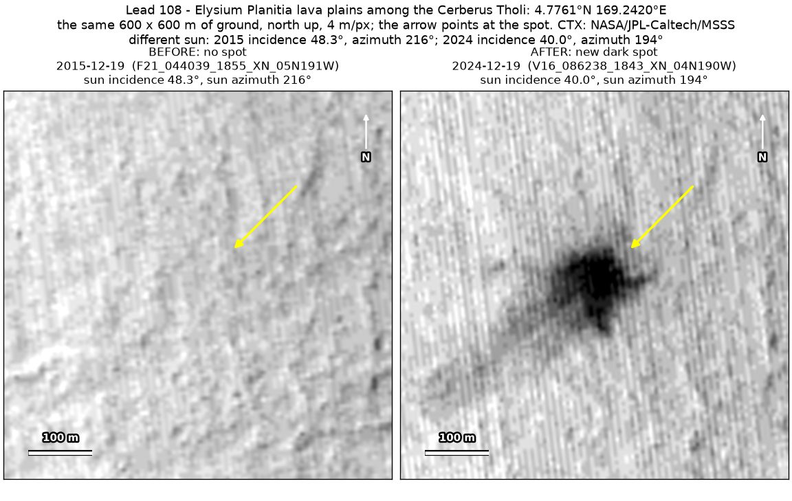
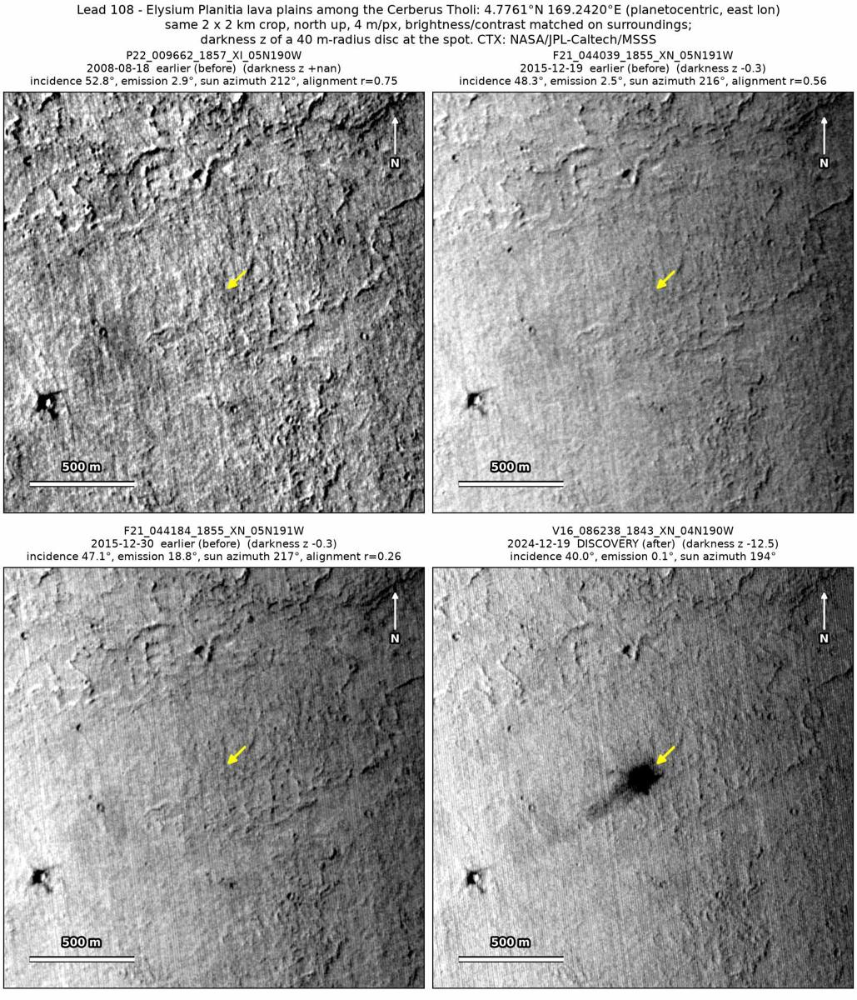
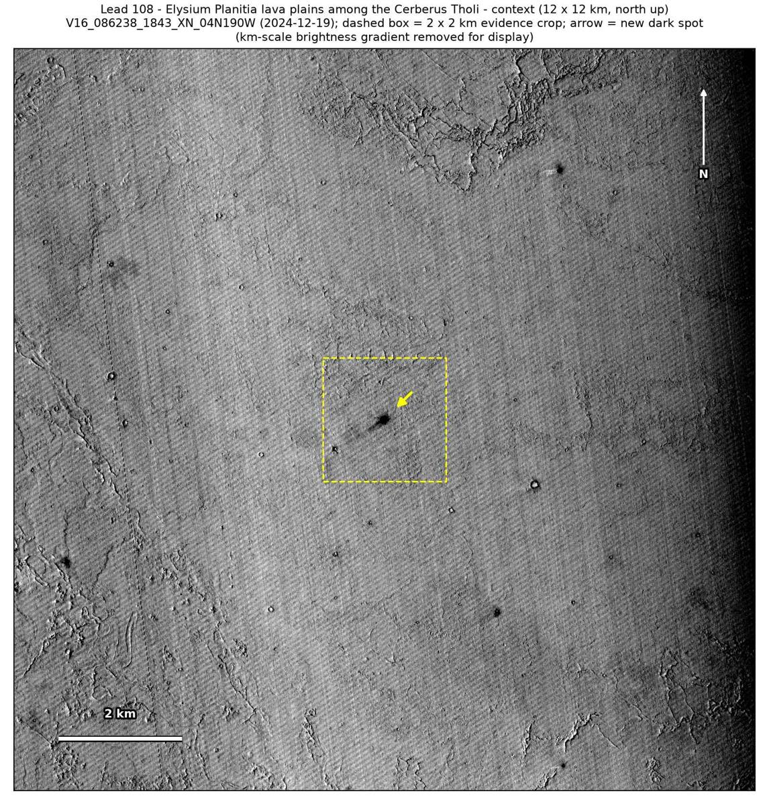

Professor of Mathematics
Paata Ivanisvili
Department of Mathematics, University of California, Irvine

← Possible new impact sites on Mars
Candidate 108: Elysium Planitia lava plains among the Cerberus Tholi
Promising · roughly 70%

What changed. A dark spot about 110 m across, with ragged edges, a short ray to the east and a fainter tail to the west-south-west, appeared on smooth lava plains of Elysium Planitia among the Cerberus Tholi between December 2015 and December 2024, in one CTX image so far.
Why it may be a new impact. The earlier image of 19 December 2015, under a lower sun than the December 2024 image, which would show a hollow better, not worse, shows no spot there, and two more earlier images show nothing by eye. The aligned before-and-after difference is deepest at the spot, with no other new dark mark in the surrounding 5 × 5 km, and a dark core with a ray and no tracks fits the blast zone of a small new crater better than wind or a dust devil.
- Location
- 4.776° N, 169.242° E
- Absent
- 19 December 2015
- Present
- 19 December 2024
- Size
- Dark spot about 110 m across (140 × 128 m), a ragged dark core with a short ray to the east and a fainter tail reaching about 290 m to the west-south-west
- Confidence
- Promising candidate: roughly 70% likely to be a new impact.
- Caveat
- Only one image shows it, so an image defect cannot be fully ruled out, although the spot spans about 25 × 23 image pixels and has a ray and a tail. Only one earlier image is counted, and the dark feature nearby used as a check is too faint in the earlier images to show that they would have caught a spot. No image from the high-resolution HiRISE camera covers it; the nearest ends 6.4 km away. Like every candidate here, it is unconfirmed: see the caveat.

